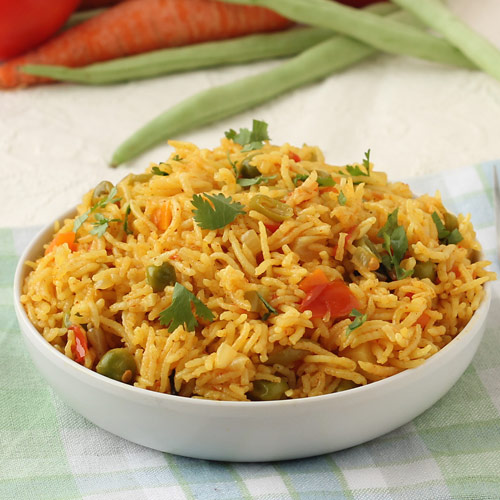

South Indian Recipes
South Indian RecipesBreakfast
Rice items
Sambars and Curry
Sweets
Snacks
 Vegetable Pulao is a quintessential South Indian dish that has roots deeply embedded in the rich culinary history of the region. This aromatic and flavorful rice dish is a perfect example of the diverse and vibrant food culture that South India is renowned for. The history of Vegetable Pulao dates back centuries, with its origins intertwined with the trade routes that connected the Indian subcontinent with the Middle East. Spices like cumin, cardamom, and cloves, which are essential to the pulao's distinct flavor, were introduced to South India through these trade routes. Over time, local ingredients were incorporated, resulting in the unique blend of flavors that characterize Vegetable Pulao. The dish typically features fragrant Basmati rice cooked with an assortment of fresh vegetables such as carrots, peas, and beans. The vegetables add both color and nutritional value to the dish, making it a wholesome and satisfying meal. The magic, however, lies in the spices and herbs used in the preparation. South Indian cuisine is renowned for its bold and aromatic spices, and Vegetable Pulao is no exception. Cinnamon, cardamom, cloves, and bay leaves are combined with cumin seeds to create a symphony of flavors that elevate the simple rice and vegetables to a culinary masterpiece. The taste of Vegetable Pulao is a delightful medley of savory, slightly spicy, and aromatic notes. Each grain of rice is infused with the essence of the spices, while the vegetables contribute their distinct flavors and textures. The dish is often served with raita, a yogurt-based side dish, to balance the spices and provide a cooling element.
Vegetable Pulao is a quintessential South Indian dish that has roots deeply embedded in the rich culinary history of the region. This aromatic and flavorful rice dish is a perfect example of the diverse and vibrant food culture that South India is renowned for. The history of Vegetable Pulao dates back centuries, with its origins intertwined with the trade routes that connected the Indian subcontinent with the Middle East. Spices like cumin, cardamom, and cloves, which are essential to the pulao's distinct flavor, were introduced to South India through these trade routes. Over time, local ingredients were incorporated, resulting in the unique blend of flavors that characterize Vegetable Pulao. The dish typically features fragrant Basmati rice cooked with an assortment of fresh vegetables such as carrots, peas, and beans. The vegetables add both color and nutritional value to the dish, making it a wholesome and satisfying meal. The magic, however, lies in the spices and herbs used in the preparation. South Indian cuisine is renowned for its bold and aromatic spices, and Vegetable Pulao is no exception. Cinnamon, cardamom, cloves, and bay leaves are combined with cumin seeds to create a symphony of flavors that elevate the simple rice and vegetables to a culinary masterpiece. The taste of Vegetable Pulao is a delightful medley of savory, slightly spicy, and aromatic notes. Each grain of rice is infused with the essence of the spices, while the vegetables contribute their distinct flavors and textures. The dish is often served with raita, a yogurt-based side dish, to balance the spices and provide a cooling element.
